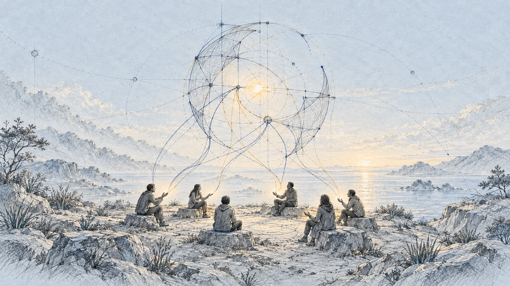

AI Summit PJAIT · 16 września 2026
Pytania na koniec
Andrzej Dragan, Bartosz Naskręcki, Tomasz Bagiński, Jacek Dukaj, Przemysław „Psyho” Dębiak
Prowadzi Grzegorz Dobiecki

Co zostanie dla człowieka, gdy AI będzie tworzyć, programować i odkrywać coraz więcej? Końcowe pytania publiczności wracają do pracy, ryzyka, sztuki oraz wartości samego przeżywania i bycia ze sobą.
Najważniejsze wątki
Nie tylko wynik
Rozmowa nie daje jednej odpowiedzi. Prognozy szybkiego rozwoju AI spotykają się z pytaniami o granice kontroli, własną ocenę twórcy i to, czego nie można sprowadzić do produktu widocznego dla innych.
Najmocniej powraca rozróżnienie między efektem a doświadczeniem: AI może dostarczyć lepszy wynik, ale nie przeżyje za nas naszego tworzenia ani kontaktu z drugim człowiekiem. To stanowiska rozmówców, a nie potwierdzony opis przyszłości.
- Prognozy zależą od utrzymania obecnej trajektorii; możliwe są także jej zmiany i zahamowanie.
- W pracy liczą się szybkie dostosowanie do nowych narzędzi oraz ocena tego, co aktualnie pozostaje trudne.
- Techniczna wiedza o systemie nie oznacza automatycznie kontroli nad jego dalszym rozwojem.
- Autoteliczność oznacza tutaj wartość samego tworzenia i własnego przeżycia, niezależną od liczby odbiorców czy zarobku.
- Bycie ze sobą, dotyk i wspólne doświadczenie pozostają ważnymi propozycjami ludzkiej wartości.
Czy następny Einstein będzie człowiekiem?
Pytanie o zdolność łączenia coraz większej liczby kropek prowadzi do prognozy, że przyszłe przełomowe odkrycia mogą powstawać przede wszystkim dzięki AI. Rozmówca uzależnia tę prognozę od utrzymania obecnej trajektorii i dopuszcza jej zahamowanie lub zmianę.
Nie jest to dowód przyszłego przebiegu. W odpowiedzi pojawia się ekstrapolacja obserwowanego postępu oraz możliwość, że ludzki udział we współpracy z AI stanie się z czasem dekoracyjny.
W transkrypcie · Część 1 · około 02:45 ↗
Analogia i prywatne przeżycie
Pada zarzut nadużywania słowa „tylko” w dyskusji o AI. Stwierdzenie, że coś jest matematyką lub funkcją, nie rozstrzyga jeszcze, co taki system może robić. Rozmowa przechodzi do sztuki, metafor i analogii.
Pojawia się wyraźne rozróżnienie między dziełem, które trafiło do wspólnej przestrzeni postrzegania, a przeżyciem zachodzącym wyłącznie w umyśle jednej osoby. Nie wszyscy zgadzają się, że przywołane analogie obejmują całą sztukę.
W transkrypcie · Część 1 · około 05:12 ↗
Pisarz i AI
W odpowiedzi na pytanie o dobrą powieść rozmówca ocenia, że obecne możliwości mogą jeszcze nie wystarczać, ale nie widzi powodu, dla którego AI wkrótce nie mogłaby tworzyć takich tekstów samodzielnie.
Synergia pisarza z AI zostaje przedstawiona jako prawdopodobnie krótki etap pośredni. Pada przewidywanie, że człowiek może później pozostać twarzą służącą sprzedaży utworów; to prognoza rozmówcy, nie opis potwierdzonego stanu.
W transkrypcie · Część 1 · około 07:52 ↗
Programowanie i szybka zmiana
W odpowiedzi pojawia się zalecenie szerokiego rozumienia technologii i częstego dostosowywania się do nowych narzędzi. Rozmówca podkreśla brak złotej recepty i potrzebę szukania aktualnych problemów oraz słabych miejsc modeli.
Sceptycznie ocenia planowanie kariery na kilka lat i trwałą przewagę „kraftowych” programistów. Argument dotyczy szczególnie działań, których rezultat można łatwo zweryfikować.
W transkrypcie · Część 1 · około 09:15 ↗
Przewaga, standard i startupy
Pada ocena, że dostawcy modeli szybko poprawiają się wzajemnie, a ich przewagi bywają krótkie i lokalne. Możliwość nowych otwartowagowych modeli zostaje przywołana jako kolejna potencjalna zmiana hierarchii.
Druga oś rozmowy dotyczy efektu sieciowego i utrwalonego standardu. Argument o przyzwyczajeniu klientów spotyka się z kontrargumentem o łatwym przechodzeniu użytkowników do lepszej aplikacji. W odpowiedzi odróżniono bezpośrednie używanie czatu od włączania AI do istniejących biznesów.
Obecny etap AI zostaje porównany do epoki kamienia łupanego. Pada sugestia, że jest za wcześnie na trwałe wskazanie przyszłych zwycięzców.
Na pytanie o startupy pada odpowiedź twierdząca, z akcentem na próbowanie nowych rozwiązań i dużą dynamikę zmian.
W transkrypcie · Część 1 · około 12:12 ↗ · Część 1 · około 15:04 ↗
„Katedra” i jakość techniczna
Pytanie, czy „Katedra” wyglądałaby tak samo przy dzisiejszej AI, otrzymuje odpowiedź przeczącą. Rozmówca podkreśla, że dzieło powstaje w konkretnym czasie i przy konkretnych ograniczeniach technologicznych.
Wspomina przechodzenie przez wiele pomysłów oraz znalezienie sposobu opowiedzenia historii w ówczesnych warunkach. Dzisiaj, według tej odpowiedzi, powstałby inny film.
Tomasz Bagiński jest pytany, co AI w jego pracy zrobiła lepiej, a nie szybciej. Odpowiedź brzmi: nic, choć narzędzia są sprawnym pomocnikiem i przyspieszają część procesów.
Rozmówca oddziela wzrost jakości technicznej od wartości sztuki, rozrywki i doświadczenia. Ocena tego, co chce wypuścić w świat, pozostaje jego własna.
W transkrypcie · Część 1 · około 16:05 ↗ · Część 3 · około 07:16 ↗
Inspiracja, prawo i regulacje
Pada stwierdzenie, że modele trenowano na twórczości rozmówcy. Dyskusja zestawia inspiracje artystów uczących się od innych z uczeniem modeli i z pretensjami twórców o wykorzystywanie ich prac.
Rozmówca odróżnia model generujący nowe treści od prostej bazy danych wykonującej „kopiuj i wklej”. Osobistą ocenę moralną oddziela od pytania o system prawny, który miałby sprzyjać ludziom i nie zniechęcać artystów do tworzenia.
Pytanie o normy etyczne prowadzi do rozróżnienia założeń regulacji i jej skuteczności. Rozmówca deklaruje sceptycyzm wobec regulacji, dopuszczając ograniczone lokalne działanie w krótkim terminie.
Przywołuje Unię Europejską i przewiduje przenoszenie działalności poza obszar regulacji. To ocena wypowiedziana w panelu, nie zweryfikowane podsumowanie sytuacji prawnej lub gospodarczej.
W transkrypcie · Część 1 · około 21:05 ↗ · Część 1 · około 23:49 ↗
Przyszłość i ściana emocjonalna
W odpowiedzi pojawia się sprzeciw wobec tezy, że przyszłości nie da się w ogóle przewidywać. Rozmówca zwraca uwagę na różnice w trafności wcześniejszych ocen. Opisuje też emocjonalną barierę: scenariusz brzmiący jak science fiction bywa odrzucony, zanim ktoś przyjrzy się argumentom.
Nie przedstawia tego jako pożądanego biegu wydarzeń. Przewidywanie gwałtownej zmiany i chęć jej uniknięcia mogą, w tej wypowiedzi, współistnieć.
W transkrypcie · Część 2 · około 00:36 ↗
Wiedza i utrata kontroli
Pytanie dotyczy przekonania, że pracownicy laboratoriów rozumieją i kontrolują tworzoną technologię. W odpowiedzi pada rozróżnienie: wieloletnia wiedza techniczna nie daje automatycznie pełnej kontroli. W rozmowie wraca napięcie między dalszym przyspieszaniem rozwoju a ograniczaniem ryzyka.
Rozmówcy omawiają także publiczne i prywatne reakcje ludzi związanych z AI. Są to ich oceny środowiska; nieczytelne nazwisko osoby przywołanej w pytaniu pozostaje oznaczone w transkrypcie.
Rozmowa wraca do obawy przed momentem, w którym ludzie przestają kontrolować i rozumieć systemy oraz ich dalszy potencjał.
Padają hipotetyczne przykłady zastosowań poza abstrakcyjną matematyką oraz pytanie o bezpieczeństwo kryptografii. Nieczytelne nazwy i szczegóły pozostają oznaczone w transkrypcie.
W transkrypcie · Część 2 · około 03:31 ↗ · Część 3 · około 04:24 ↗
Postęp bez własnego zawodu
Pytanie skierowane do Bartosza zestawia dwa kierunki rozwoju AI: lepszą matematykę wykonywaną wspólnie z doktorantami oraz jeszcze większy postęp, który usuwa potrzebę ich pracy.
W jasnym fragmencie odpowiedzi rozmówca skłania się ku drugiej możliwości, jeżeli zyskują na tym cywilizacja i ludzkość. Stawia warunek, by systemy nie zwróciły się przeciwko ludziom.
W transkrypcie · Część 3 · około 01:12 ↗
Wartość samego tworzenia
Pytanie zestawia uczenie AI na dorobku kultury z obawą o masową, wtórną treść. Odpowiedź nie przyjmuje tego porównania bez zastrzeżeń: podobna masowa produkcja istniała, zdaniem rozmówcy, na długo przed AI.
Rozmówca oddziela tworzenie i przeżywanie sztuki od sprzedaży, marketingu oraz pracy agentów i marszandów. Podkreśla możliwość tworzenia dla siebie i najbliższych, nawet jeżeli zmieni się ekonomiczne otoczenie sztuki.
Pytanie o sztukę w fizycznym opisie człowieka prowadzi do wypowiedzi o absurdalności wykonywania portretów oraz o osobistej przyjemności z tej działalności.
Rozmówca podkreśla osobistą przyjemność z tworzenia i odróżnia ją od wartości, której upatruje w nauce lub fizyce. Dokładne określenie motywacji w tej wcześniejszej wypowiedzi jest nieczytelne.
Autoteliczność oznacza w tej wypowiedzi wartość procesu tworzenia i własnego przeżycia, niezależną od zarobku, liczby odbiorców czy wyniku technicznego.
Ta wartość miałaby pozostać również wtedy, gdy AI wytworzy coś ocenianego jako lepsze. Replika zaznacza, że z definicji jest to wartość odczuwana przez samego twórcę.
W transkrypcie · Część 1 · około 17:08 ↗ · Część 1 · około 19:19 ↗ · Część 3 · około 12:00 ↗
Bycie ze sobą
W rozmowie pada propozycja, że wartością kultury jest bycie ze sobą.
Taniec, dotyk oraz bezpośredni kontakt z innymi ludźmi pojawiają się jako obszary trudne do zastąpienia. Mówca zaznacza też, że ludzie mogą po prostu nie chcieć ich zastępować.
W transkrypcie · Część 3 · około 13:47 ↗
Cała rozmowa
Zapis pochodzi z trzech nagrań: 24:42, 7:05 i 17:41 — łącznie około 49:29. Między nagraniami są dwie luki o nieznanej długości. Każda część ma własny zegar; znaczników czasu nie należy sumować. Nieczytelne słowa i niepewne cytaty są jawnie oznaczone w pełnym transkrypcie.
Streszczenie redakcyjne na podstawie nagrań. Opinie i przewidywania należą do rozmówców. Skład Q&A oraz prowadzący według oficjalnego programu konferencji, 19:00–19:45. Zapisane nagrania nie stanowią nieprzerwanego zapisu całego wydarzenia.